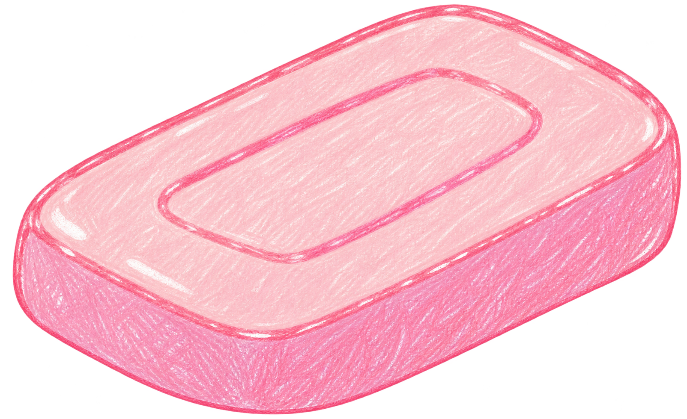

어릴 적 기억나요?
비누로 거품을 만들며 놀던 날을 기억하나요?
어린 시절의 세계로 들어가고 있어요...

나를 끌어 줘!거품을 만들고 있어요. 0%
손동작 인식 중
점수0내 비눗방울
남은 시간 20초
브이를 보여 주세요!
손가락으로 브이 포즈를 보여 주세요.
우리의 비눗방울 사진 ♡
오늘의 점수 0 / 200
비누로 거품을 만들며 놀던 날을 기억하나요?

나를 끌어 줘!손가락으로 브이 포즈를 보여 주세요.